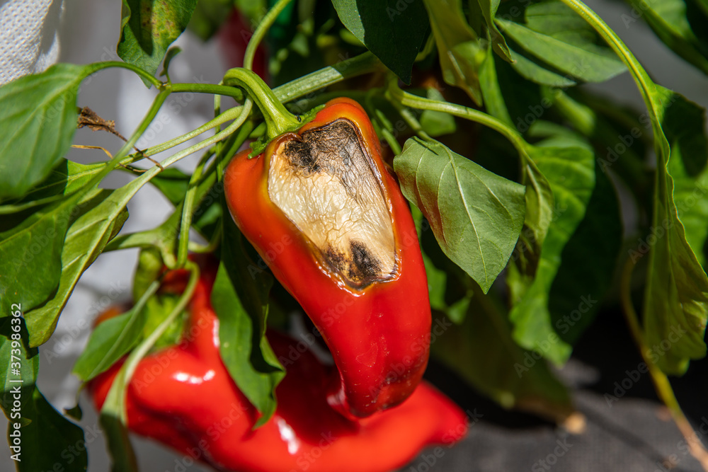
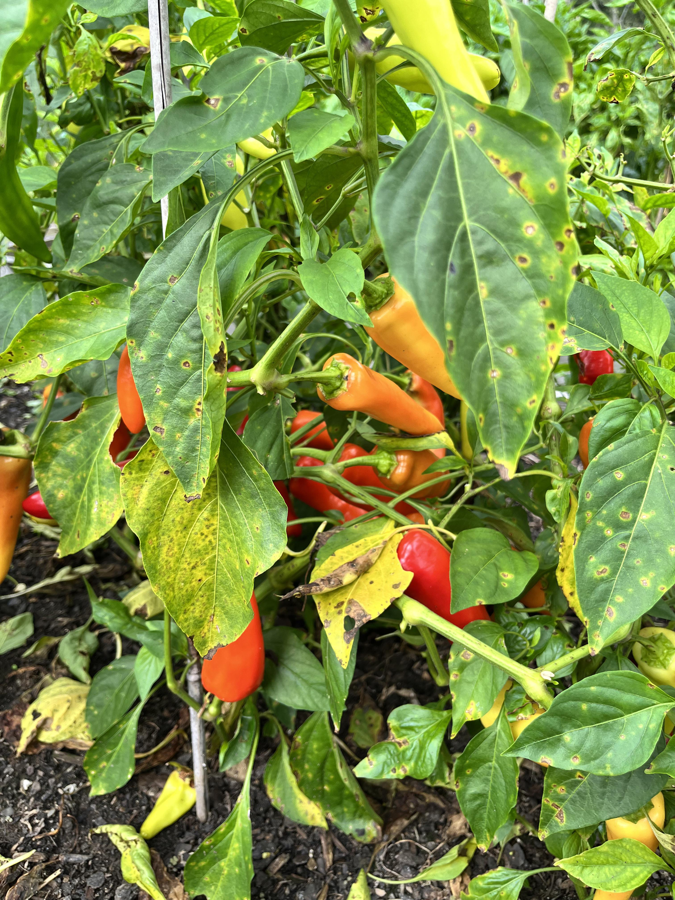
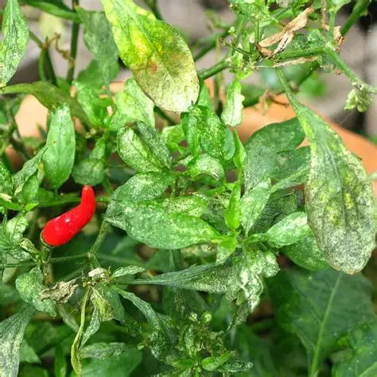
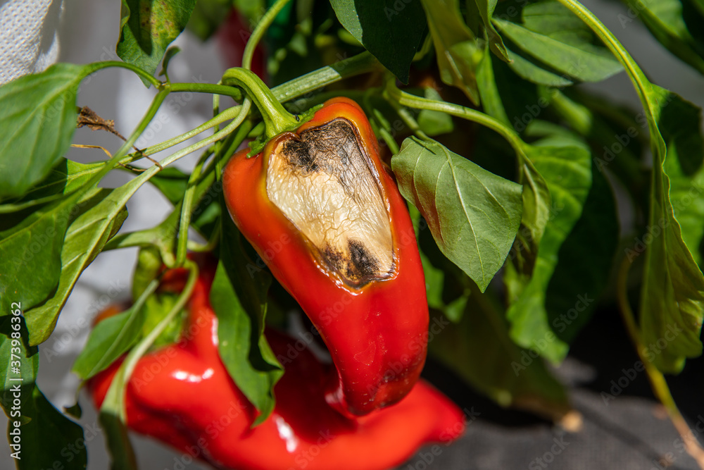
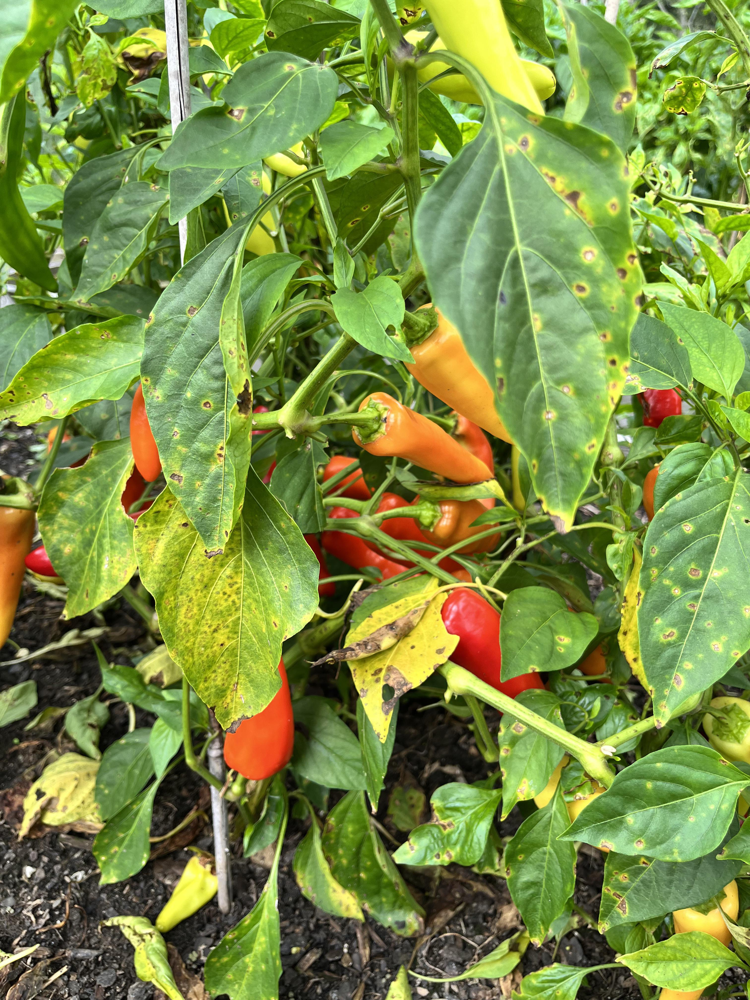
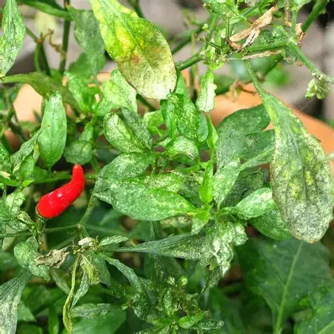
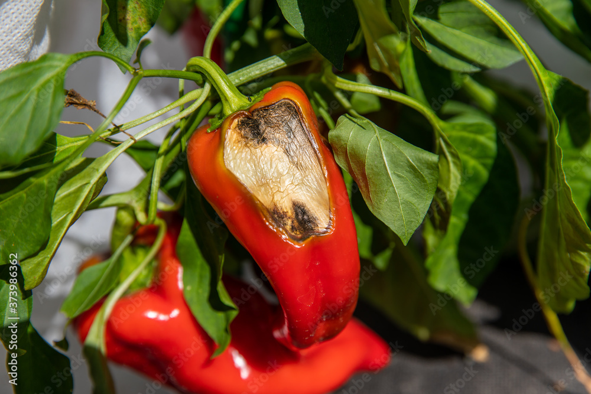
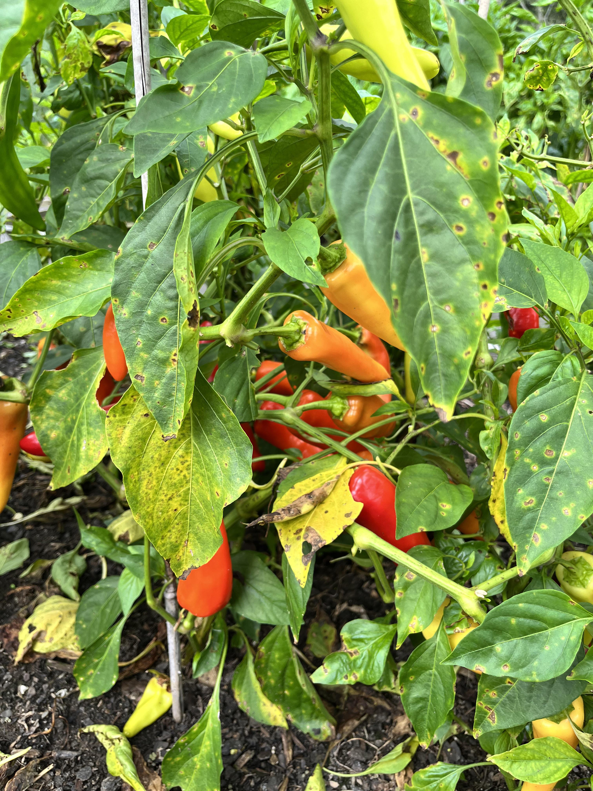
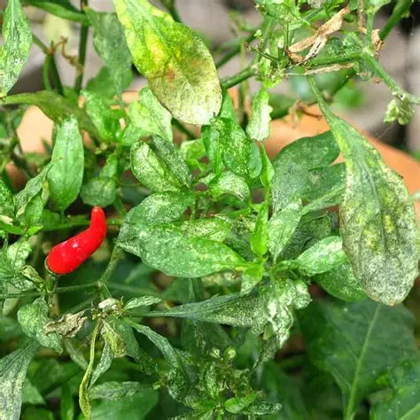
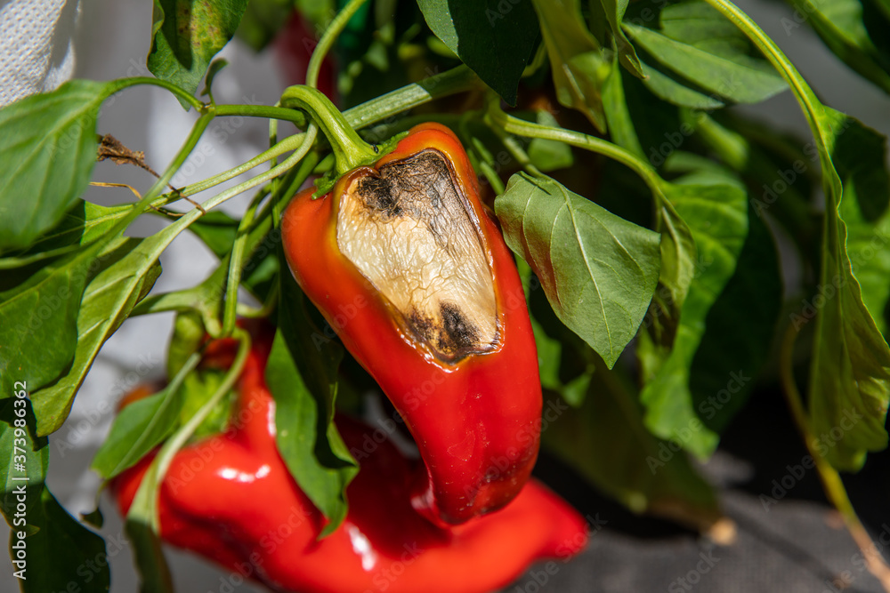
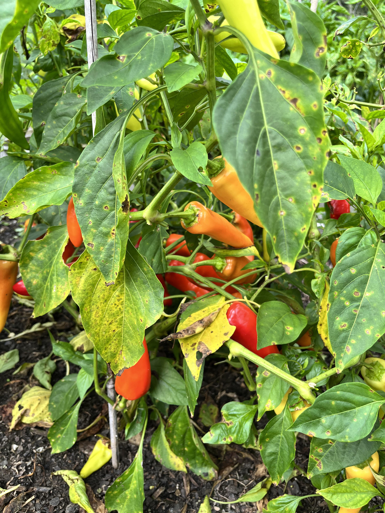
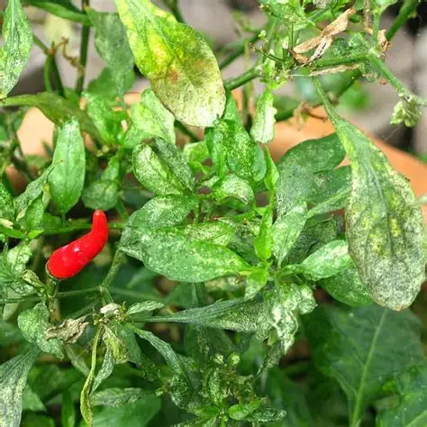
Select a disease image to see the description here. This section will show detailed information about symptoms, causes, and prevention methods to help you maintain healthy tomato crops.
Tomato plants are highly sensitive to environmental changes and various pathogens. These diseases can affect the leaves, stems, roots, or fruits, causing problems such as yellowing, wilting, spots, mold, or rotting. If not treated early, even a small infection can spread quickly and damage the entire crop.
Most tomato diseases are caused by fungi, bacteria, or viruses that thrive in warm and humid conditions. They can spread through infected soil, contaminated tools, water splash, wind, insects, or even through human touch. Some diseases also stay in the soil for years, waiting for the right conditions to reappear.